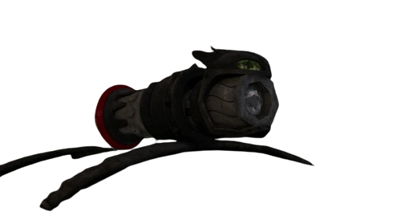
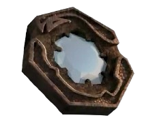

The Dragon Eye is an ancient Viking artifact used to reveal hidden maps, dragon symbols, and secret knowledge.
When activated with the correct combination of lenses and dragon fire, it projects glowing images that guide
explorers to lost locations, dragon species, and forgotten civilizations.
Made of metal and dragon bone used to activate
Contains rotating rings
Requires specific dragon fire to activate
Projects maps and symbols
The Dragon Eye II

A more advanced version of the original Dragon Eye, this artifact contains additional chambers and more complex
mechanisms. It reveals deeper secrets, including information about powerful dragons and hidden realms.
More rings and chambers than the original
Unlocks advanced maps
Requires rare dragon fire types
Used by ancient dragon riders
Dragon Eye Lenses

These lenses are essential components used to activate the Dragon Eye and Dragon Eye II. Each lens corresponds
to a specific dragon species and fire type. Without the correct lens, the artifact cannot reveal its secrets.